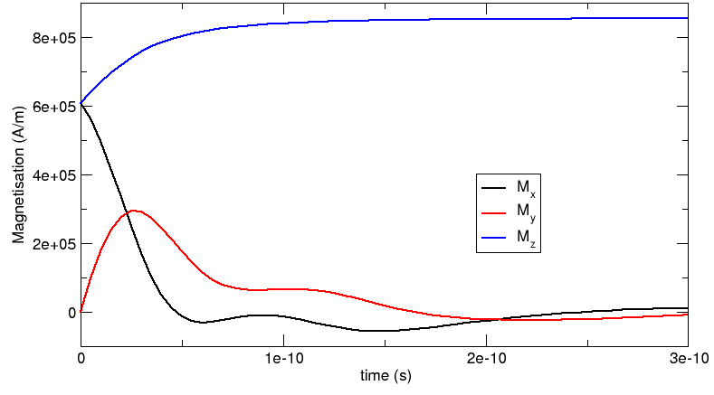
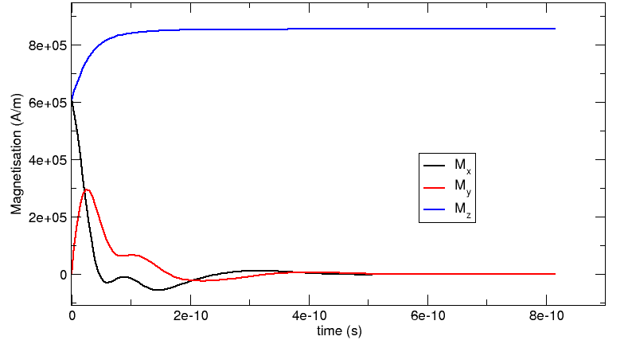

2.2. Example 2: Computing the time development of a system¶
This example computes the time development of the magnetisation in a bar with (x,y,z) dimensions 30 nm x 30 nm x 100 nm. The initial magnetisation is pointing in the [1,0,1] direction, i.e. 45 degrees away from the x axis in the direction of the (long) z-axis. We first show the simulation code and then discuss it in more detail.
2.2.1. Mesh generation¶
While it is down to the mesh generation software (see also Finite element mesh generation) to explain how to generate finite element meshes, we briefly summarize the steps necessary to create a mesh for this example in Netgen, and how to convert it into an nmesh mesh.
The finite element method requires the domain of interest to be broken down into small regions. Such a subdivision of space is known as a mesh or grid. We use Netgen to create this mesh. Netgen reads a geometry file describing the three-dimensional structure. To create the mesh used here, we can start Netgen and load the geometry file by using the menu: File-> Load Geometry. We then tell Netgen that we like the edge length to be shorter than 3 by going to Mesh->Meshing Options->Mesh Size and enter 3.0 in the max mesh-size box. Then a click on the Generate Mesh button will generate the mesh. Finally, using File->Export will save the mesh as a “neutral” file (this is the default) under the name bar30_30_100.neutral. (We provide a gzipped version of this file for completeness.)
This neutral file needs to be converted into a nmesh file. We do this using the command:
$ nmeshimport --netgen bar30_30_100.neutral bar30_30_100.nmesh.h5
By providing the .h5 extension, we tell nmeshimport to write a compressed mesh file which is significantly smaller than an ascii file (see mesh file size).
The generated mesh looks like this:

We can examine the mesh using nmeshpp to obtain information about mesh quality, the statistical distribution of edge lengths, the overall number of points and elements etc.
If you like to script the mesh generation starting from a Netgen geometry file and ending with the nmesh file, you could use (for the example above), the following shell commands:
netgen -geofile=bar30_30_100.geo -meshfiletype="Neutral Format" -meshfile=bar30_30_100.neutral -batchmode
nmeshimport --netgen bar30_30_100.neutral bar30_30_100.nmesh.h5
2.2.2. The simulation¶
Having obtained the mesh file bar30_30_100.nmesh.h5, we can use the program bar30_30_100.py to run the simulation:
import nmag from nmag import SI mat_Py = nmag.MagMaterial(name=”Py”, Ms=SI(0.86e6,”A/m”), exchange_coupling=SI(13.0e-12, “J/m”), llg_damping=0.5) sim = nmag.Simulation(“bar”) sim.load_mesh(“bar30_30_100.nmesh.h5”, [(“Py”, mat_Py)], unit_length=SI(1e-9,”m”)) sim.set_m([1,0,1]) dt = SI(5e-12, “s”) for i in range(0, 61): sim.advance_time(dt*i) #compute time development if i % 10 == 0: #every 10 loop iterations, sim.save_data(fields=’all’) #save averages and all #fields spatially resolved else: sim.save_data() #otherwise just save averages
As in Example: demag field in uniformly magnetised sphere, we start by importing nmag and creating the material object.
import nmag
from nmag import SI
mat_Py = nmag.MagMaterial(name="Py",
Ms=SI(0.86e6,"A/m"),
exchange_coupling=SI(13.0e-12, "J/m"),
llg_damping=0.5)
We set the llg_damping parameter to 0.5. As this is a dimensionless parameter, we can pass a number. Alternatively, we may give it as SI(0.5). (Note that in this example, we give the appropriate physical value for the saturisation magnetisation of PermAlloy.)
The next line creates the simulation object:
sim = nmag.Simulation("bar")
Here, we provide a name for the simulation, which is bar. This will be used as the stem of the name of any data files that are being written. If this name is not specified (as in Example: demag field in uniformly magnetised sphere), it defaults to the name of the file that contains the script (but without the .py extension).
Next, we load the mesh file, and set the initial (normalised) magnetisation to point in the [1,0,1] direction, i.e. to have equal magnitude in the x- and z-direction and 0 in the y-direction.
sim.load_mesh("bar30_30_100.nmesh.h5",
[("Py", mat_Py)],
unit_length=SI(1e-9,"m"))
sim.set_m([1,0,1])
This vector will automatically be normalised within nmag, so that [1,0,1] is equivalent to the normalised vector [0.70710678,0,0.70710678].
In this example, we would like to study a dynamic process and will ask nmag to compute the time development over a certain amount of time dt. The line:
dt = SI(5e-12, "s")
simply creates a SI object which represents our timescale.
We then have a Python for-loop in which i will take integer values ranging from 0 to 60 for subsequent iterations. All indented lines are the body of the for-loop. (In the Python programming language, scoping is expressed through indentation rather than braces or other types of parentheses. Text editors such as Emacs come with built-in support for properly indenting Python code [by pressing the Tab key on a line to be indented].)
for i in range(0, 61):
sim.advance_time(dt*i)
if i % 10 == 0:
sim.save_data(fields='all')
else:
sim.save_data()
In each iteration, we first call sim.advance_time(i*dt) which instructs nmag to carry on time integration up to the time i*dt.
The call to save_data will save the average data into the bar_dat.ndt file.
The last four lines contain an if statement which is used to save spatially resolved data every ten time steps only, and averaged data every time step. The percent operator % computes i modulo 10. This will be 0 when i takes values 0, 10, 20, 30, ... In this case, we call:
sim.save_data(fields='all')
which will save the (spatial) averages of all fields (going into the bar_dat.ndt file), and the spatially resolved data for all fields (that are saved to bar_dat.h5).
If i is not an integer multiple of 10, then the command:
sim.save_data()
is called, which only saves spatially averaged data.
2.2.3. Analysing the data¶
2.2.3.1. Time dependent averages¶
We first plot the average magnetisation vector against time. To see what data is available, we call ncol with just the name of the simulation (which here is bar):
$ ncol bar
0: #time #<s> 0
1: id <> 1
2: step <> 0
3: stage_time <s> 0
4: stage_step <> 0
5: stage <> 0
6: E_total_Py <kg/ms^2> -0.2603465789714
7: phi <A> 0.0002507410390772
8: E_ext_Py <kg/ms^2> 0
9: H_demag_0 <A/m> -263661.6680783
10: H_demag_1 <A/m> -8.218106743355
11: H_demag_2 <A/m> -77027.641984
12: dmdt_Py_0 <A/ms> -8.250904652583e+15
13: dmdt_Py_1 <A/ms> 2.333344983225e+16
14: dmdt_Py_2 <A/ms> 8.250904652583e+15
15: H_anis_Py_0 <A/m> 0
16: H_anis_Py_1 <A/m> 0
17: H_anis_Py_2 <A/m> 0
18: m_Py_0 <> 0.7071067811865
19: m_Py_1 <> 0
20: m_Py_2 <> 0.7071067811865
21: M_Py_0 <A/m> 608111.8318204
22: M_Py_1 <A/m> 0
23: M_Py_2 <A/m> 608111.8318204
24: E_anis_Py <kg/ms^2> 0
25: E_exch_Py <kg/ms^2> 5.046530179037e-17
26: rho <A/m^2> 0.03469702141876
27: H_ext_0 <A/m> 0
28: H_ext_1 <A/m> 0
29: H_ext_2 <A/m> 0
30: H_total_Py_0 <A/m> -263661.6680783
31: H_total_Py_1 <A/m> -8.218106743352
32: H_total_Py_2 <A/m> -77027.641984
33: E_demag_Py <kg/ms^2> -0.2603465789714
34: H_exch_Py_0 <A/m> 3.301942533099e-11
35: H_exch_Py_1 <A/m> 0
36: H_exch_Py_2 <A/m> 3.301942533099e-11
37: maxangle_m_Py <deg> 0
38: localtime <> 2007/08/15-11:16:19
39: unixtime <s> 1187172979.6
The meaning of the various entries is discussed in detail in section ncol. Here, we simply note that the column indices (given by the number at the beginning of every line) we are most interested in are:
- 0 for the time,
- 21 for M_Py_0 which is the x-component of the magnetisation of the Py material,
- 22 for M_Py_1 which is the y-component of the magnetisation of the Py material, and
- 23 for M_Py_2 which is the z-component of the magnetisation of the Py material,
We can use ncol to extract this data into a file data_M.dat which has the time for each time step in the first column and the x, y and z component of the magnetisation in columns 2, 3 and 4, respectively:
$ ncol bar 0 21 22 23 > data_M.txt
This creates a text file data_M.txt that can be read by other applications to create a plot.
Note, however, that the order of the entries in the ndt file is not guaranteed, i.e. the numbers corresponding to fields may change with different versions of the software, or different simulations (for example, the user may add extra fields). Therefore, the recommended approach is to directly specify the names of the columns that are to be extracted (i.e. time M_Py_0 M_Py_1 M_Py_2):
$ ncol bar time M_Py_0 M_Py_1 M_Py_2 > data_M.txt
We use the xmgrace command:
xmgrace -nxy data_M.txt
to create the following plot (manually adding the legend and axis labels):
2.2.3.2. Comparison with OOMMF and Magpar¶
We have carried out the same simulation with Magpar and OOMMF. The following plot shows the corresponding OOMMF-curves (as spheres) together with nmag‘s results. (The Magpar curve, which is not shown here, follows the nmag data very closely.)

2.2.3.3. Spatially resolved fields¶
The command sim.save_data(fields='all') saves all fields into the file bar_dat.h5 (as explained, the filename is composed of the name of the simulation [here bar] and the extension _dat.h5). The code bar30_30_100.py above calls the save_data command every 10 iterations. As every dt corresponds to 0.5 picoseconds, the data hence is saved every 5 picoseconds.
We can confirm this by using the nmagpp command:
$ nmagpp --idlist bar
which produces the following output:
id stage step time fields
0-> 1 0 0 E_anis E_demag E_exch E_ext E_total H_anis H_demag ... phi pin rho
10-> 1 312 5e-11 E_anis E_demag E_exch E_ext E_total H_anis H_demag ... phi pin rho
20-> 1 495 1e-10 E_anis E_demag E_exch E_ext E_total H_anis H_demag ... phi pin rho
30-> 1 603 1.5e-10 E_anis E_demag E_exch E_ext E_total H_anis H_demag ... phi pin rho
40-> 1 678 2e-10 E_anis E_demag E_exch E_ext E_total H_anis H_demag ... phi pin rho
50-> 1 726 2.5e-10 E_anis E_demag E_exch E_ext E_total H_anis H_demag ... phi pin rho
60-> 1 762 3e-10 E_anis E_demag E_exch E_ext E_total H_anis H_demag ... phi pin rho
The first column is a unique identifier id for a configuration of the system. We can use the --range argument to select entries for further processing. The stage is only relevant for calculations of hysteresis curves (see Example: Simple hysteresis loop). The step is the time-stepper iteration counter for this calculation. The time is given in seconds (<s>). (Note the 5 pico-second interval between entries.) The stage, step and time data is provided for convenience. What follows is a list of fields that have been saved for each of these configurations.
We convert the first saved time step into a vtk file with base name bar_initial.vtk using
$ nmagpp --range 0 --vtk bar_initial.vtk bar
and we also convert the last saved time step at 300 picoseconds to a vtk file with base name bar_final.vtk using:
$ nmagpp --range 60 --vtk bar_final.vtk bar
The actual file names that are created by these two commands are bar_initial-000000.vtk and bar_final-000060.vtk. The appended number is the id of the saved configuration. This is useful if one wants to create vtk files for all saved configurations. For example:
$ nmagpp --vtk bar.vtk bar
will create the files:
bar-000000.vtk
bar-000010.vtk
bar-000020.vtk
bar-000030.vtk
bar-000040.vtk
bar-000050.vtk
bar-000060.vtk
Using MayaVi, we can display this data in a variety of ways. Remember that all field values are shown in SI units by default (see nmagpp), and positions are as provided in the mesh file. In this case, positions are expressed in nanometers (this comes from the unit_length=SI(1e-9,"m") expression in the sim.load_mesh() command.
This is the initial configuration with magnetisation pointing in the [1,0,1] direction:

The “final” configuration shows that the magnetisation aligns along the z-direction. The coloured surface shows the x-component of the magnetisation (and the colorbar provides the scale). It can be seen that the magnetisation at position z=100 nm goes into a flower state to minimise the overall energy. (Note that, strictly speaking, this system is not yet in a meta-stable state after 300 ps – but already quite close.):
Because we have saved all fields (not just the magnetisation), we can also study other properties. For example, the following image shows the demagnetisation field as vectors (and the legend refers to the magnitude of the vectors), as well as the magnetic scalar potential (as a stack of isosurfaces). Because the demagnetisation field is the (negative) gradient of the scalar potential, the vectors are perpendicular on the isosurfaces:
2.2.4. Higher level functions¶
We now have seen an overview over the fundamental commands used to set up a micromagnetic simulation and demonstrate how to advance the configuration of the system through time. In principle, this is all one would need to know to compute hysteresis loops and carry out most micromagnetic computations. However, there are more advanced functions that simplify and automatise the most frequent tasks, such as computing a hysteresis loop.
2.2.5. “Relaxing” the system¶
The relax command takes the current magnetisation configuration of a simulation and computes the time development until the torque on each mesh site is smaller than a certain threshold. This is useful for this particular example as we do not know for how long we need to integrate the system until it stops in a local energy minimum configuration. We can adjust the code of this example to make use of the relax command (modified source code):
import nmag
from nmag import SI, every, at
mat_Py = nmag.MagMaterial( name="Py",
Ms=SI(0.86e6, "A/m"),
exchange_coupling=SI(13.0e-12, "J/m"),
llg_damping=0.5)
sim = nmag.Simulation("bar_relax")
sim.load_mesh("bar30_30_100.nmesh.h5", [("Py", mat_Py)],
unit_length=SI(1e-9, "m"))
sim.set_m([1, 0, 1])
ps = SI(1e-12,"s")
sim.relax(save = [('averages', every('time', 5*ps)),
('fields', at('convergence'))])
(Note the additions to the import statement!)
The particular relax command employed here:
sim.relax(save = [('averages', every('time',5*ps)),
('fields', at('convergence'))])
works as follows:
The argument save = [ ] tells relax to save data according to the instructions given in the form of a python list (i.e. enclosed by square brackets). The first relax instruction is this tuple:
('averages', every('time',5*ps)
and means that the averages should be saved every 5 picoseconds. The syntax used here breaks down into the following parts:
- 'averages' is just the keyword (a string) to say that the average data should be saved.
- every(...) is a special object which takes two parameters. They are here:
- 'time' to indicate that something should be done every time a certain amount of simulated time has passed, and
- 5*ps which is the amount of time after which the data should be saved again. This has to be a SI object, which we here obtain by multiplying a number (5) with the SI object ps which has been defined earlier in our example program to represent a pico-second.
- We can provide further keywords to the every object (for example to save the data every 10 iteration steps we can use every('step', 10)).
Internally, the relax command uses the hysteresis command, so the documentation of hysteresis should be consulted for a more detailed explanation of parameters.
The second relax instruction is:
('fields', at('convergence'))
which means that the fields should be saved at convergence, i.e. when the relaxation process has finished and the magnetisation has converged to its (meta)stable configuration:
- 'fields' is a string that indicates that we would like to save all the defined fields.
- at('convergence') is a special object that indicates that this should happen exactly when the relaxation process has converged.
After running this program, we can use the ncol tool to look at the averages saved:
$ ncol bar_relax step time
gives output which starts like this:
0 0
82 5e-12
120 1e-11
146 1.5e-11
176 2e-11
201 2.5e-11
227 3e-11
248 3.5e-11
Here, we see the iterations on the left and the simulated time (in seconds) on the right. As requested, there is one data entry (i.e. line) every 5 picoseconds.
Note that it may happen that the system saves the data not exactly at the requested time, i.e.:
532 6.5e-11
580 7.047908066945e-11
620 7.5e-11
The middle line shows that the data has been saved when the simulated time was approximately 7.05e-11 seconds whereas we requested 7e-11 seconds. Such small deviations are tolerated by the system to improve performance [1].
From the data saved, we can obtain the following plot:
In summary, the relax function is useful to obtain a meta-stable configuration of the system. In particular, it will carry out the time integration until the remaining torque at any point in the system has dropped below a certain threshold.
| [1] | The time integrator (here, Sundials CVODE) would have to do an extra step to get to the requested time. If the current time is very close to the requested time, it will simply report this value. |
2.2.6. “Relaxing” the system faster¶
If we are only interested in the final (meta-stable) configuration of a run, we can switch off the precession term in the Laundau Lifshitz and Gilbert equation. The MagMaterial definition in the following example shows how to do this:
import nmag
from nmag import SI, every, at
mat_Py = nmag.MagMaterial( name="Py",
Ms=SI(0.86e6, "A/m"),
exchange_coupling=SI(13.0e-12, "J/m"),
llg_damping=0.5,
do_precession=False )
sim = nmag.Simulation("bar_relax2")
sim.load_mesh("bar30_30_100.nmesh.h5", [("Py", mat_Py)],
unit_length=SI(1e-9, "m"))
sim.set_m([1, 0, 1])
ps = SI(1e-12,"s")
sim.relax(save = [('averages', every('time', 5*ps)),
('fields', at('convergence'))])
The new option is do_precession=False in the constructor of the PermAlloy material mat_Py. As a result, there will be no precession term in the equation of motion:

While the time-development of the system happens at the same time scale as for the system with the precession term (see “Relaxing” the system), the computation of the system without the precession is significantly faster (for this example, we needed about 3500 iterations with the precession term and 1500 without it, and the computation time scales similarly).
Note, that the ‘’dynamics’’ shown here are of course artificial and only used to obtain a meta-stable physical configuration more efficiently!
2.2.7. Decreasing execution time¶
Note that the execution time can generally be reduced significantly by decreasing the tolerances for the time integrator. In short, one has to use the set_params function (after set_m has been called). Decreasing the requested accuracy will of course make the simulation results less accurate but this is often acceptable. An example of how to use the set_m function and detailed discussion of the micromagnetic example shown in this section for a variety of tolerance values is given in the section Example timestepper tolerances.